Whitney Sutherland, COMD 4590. Deck dated 2023. Original blanks are preserved. Lesson notes identify inferred fills separately.
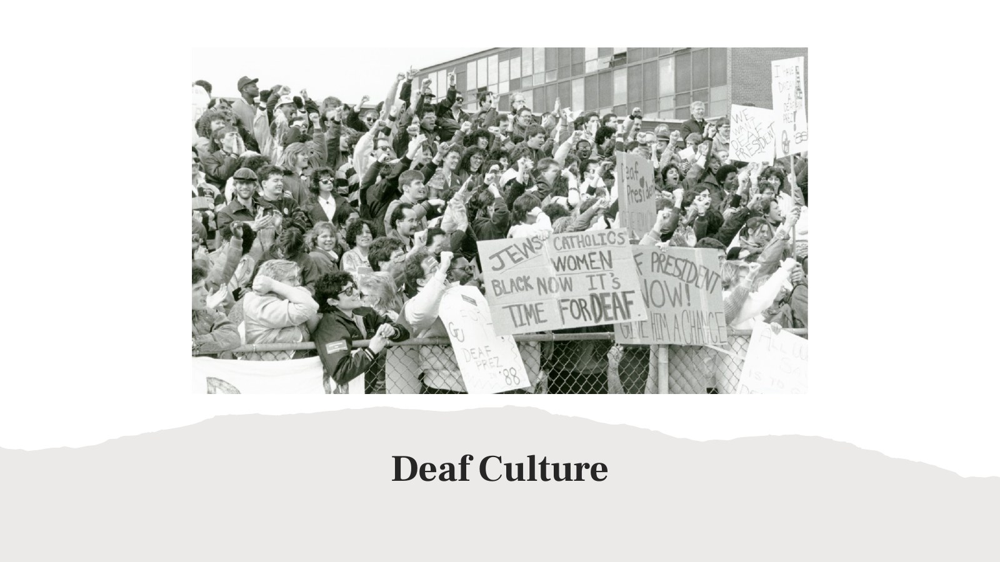
Deaf Culture
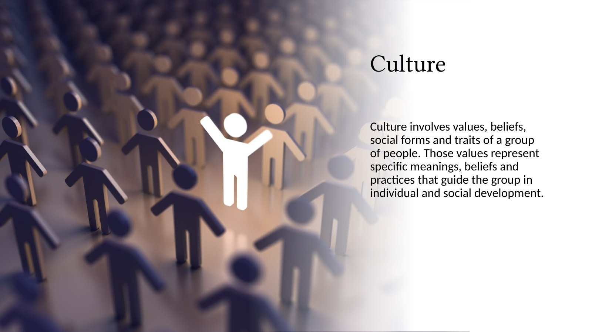
Culture Culture involves values, beliefs, social forms and traits of a group of people. Those values represent specific meanings, beliefs and practices that guide the group in individual and social development.
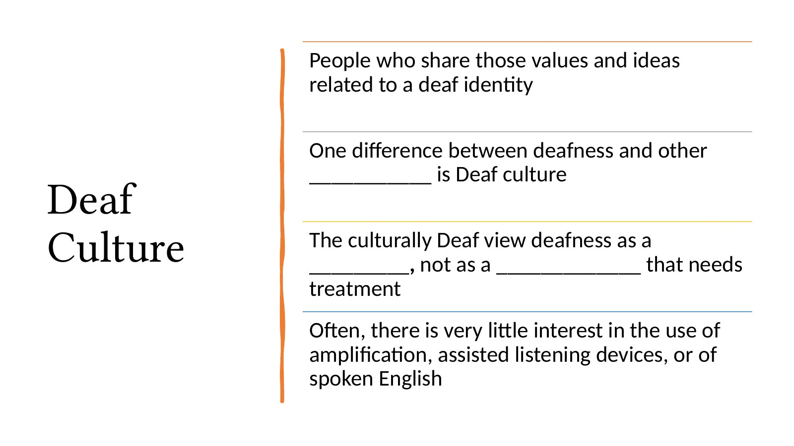
People who share those values and ideas
related to a deaf identity
One difference between deafness and other
___________ is Deaf culture
Deaf
Culture The culturally Deaf view deafness as a
_________, not as a _____________ that needs
treatment
Often, there is very little interest in the use of
amplification, assisted listening devices, or of
spoken English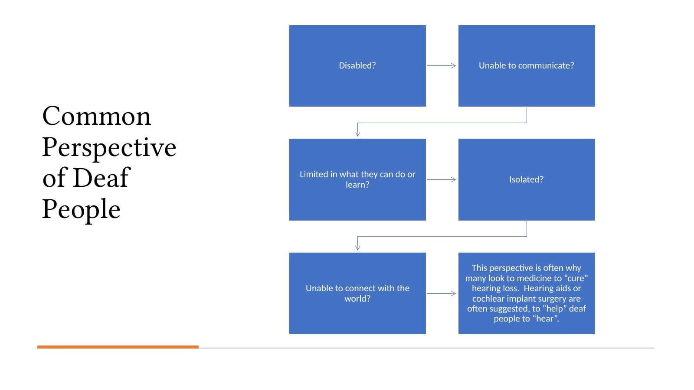
Disabled? Unable to communicate?
Common
Perspective
of Deaf Limited in what they can do or
learn?
Isolated?
People
This perspective is often why
many look to medicine to “cure”
Unable to connect with the hearing loss. Hearing aids or
world? cochlear implant surgery are
often suggested, to “help” deaf
people to “hear”.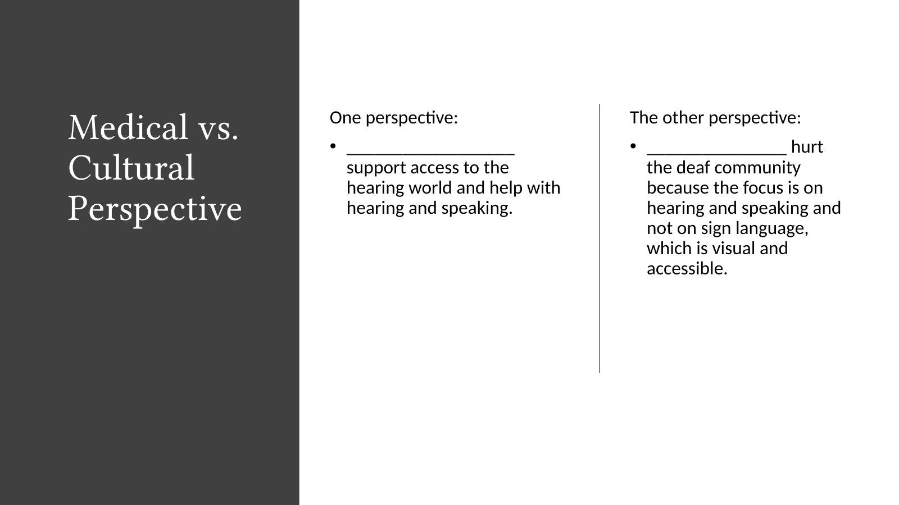
Medical vs. One perspective:
• __________________
The other perspective:
• _______________ hurt
Cultural support access to the
hearing world and help with
the deaf community
because the focus is on
Perspective hearing and speaking. hearing and speaking and
not on sign language,
which is visual and
accessible.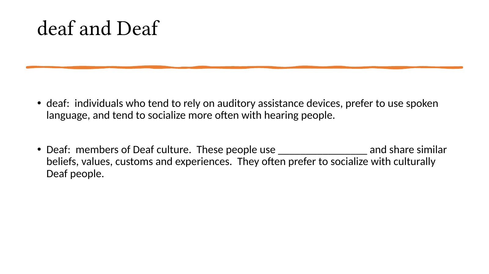
deaf and Deaf • deaf: individuals who tend to rely on auditory assistance devices, prefer to use spoken language, and tend to socialize more often with hearing people. • Deaf: members of Deaf culture. These people use ________________ and share similar beliefs, values, customs and experiences. They often prefer to socialize with culturally Deaf people.
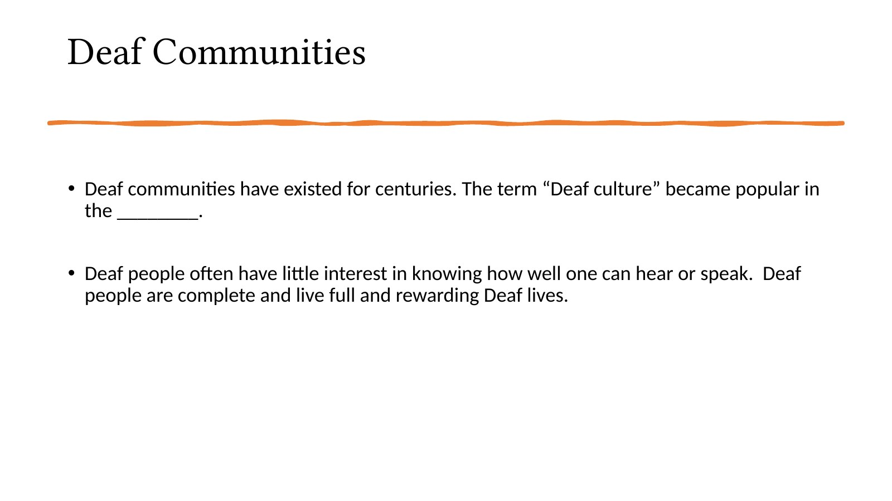
Deaf Communities • Deaf communities have existed for centuries. The term “Deaf culture” became popular in the ________. • Deaf people often have little interest in knowing how well one can hear or speak. Deaf people are complete and live full and rewarding Deaf lives.
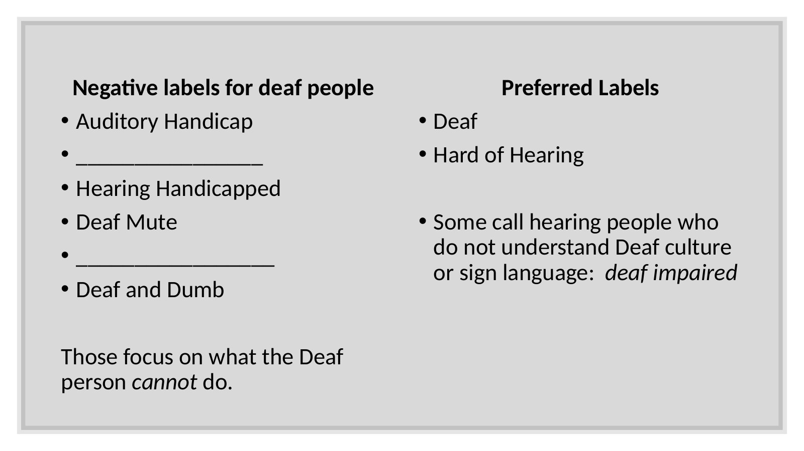
Negative labels for deaf people Preferred Labels
• Auditory Handicap • Deaf
• ________________ • Hard of Hearing
• Hearing Handicapped
• Deaf Mute • Some call hearing people who
• _________________ do not understand Deaf culture
or sign language: deaf impaired
• Deaf and Dumb
Those focus on what the Deaf
person cannot do.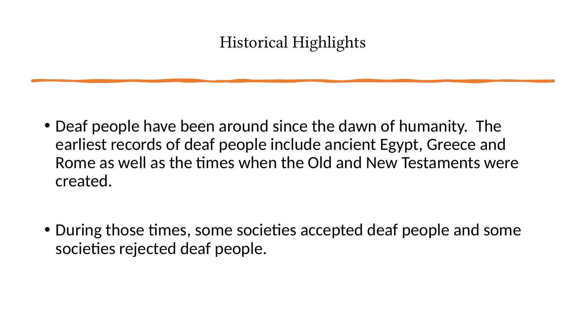
Historical Highlights • Deaf people have been around since the dawn of humanity. The earliest records of deaf people include ancient Egypt, Greece and Rome as well as the times when the Old and New Testaments were created. • During those times, some societies accepted deaf people and some societies rejected deaf people.
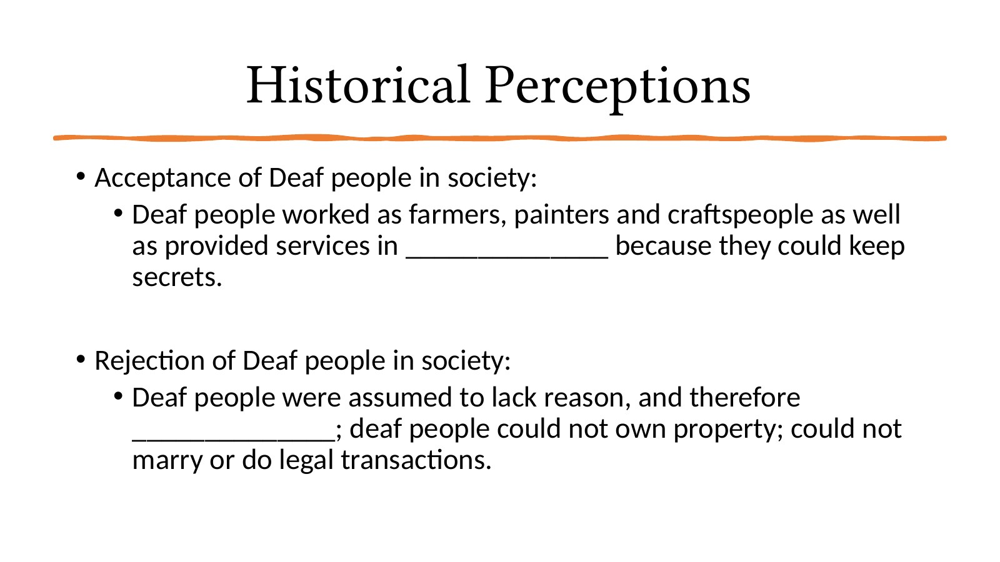
Historical Perceptions
• Acceptance of Deaf people in society:
• Deaf people worked as farmers, painters and craftspeople as well
as provided services in ______________ because they could keep
secrets.
• Rejection of Deaf people in society:
• Deaf people were assumed to lack reason, and therefore
______________; deaf people could not own property; could not
marry or do legal transactions.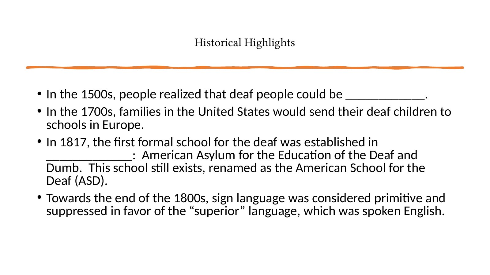
Historical Highlights • In the 1500s, people realized that deaf people could be ____________. • In the 1700s, families in the United States would send their deaf children to schools in Europe. • In 1817, the first formal school for the deaf was established in _____________: American Asylum for the Education of the Deaf and Dumb. This school still exists, renamed as the American School for the Deaf (ASD). • Towards the end of the 1800s, sign language was considered primitive and suppressed in favor of the “superior” language, which was spoken English.
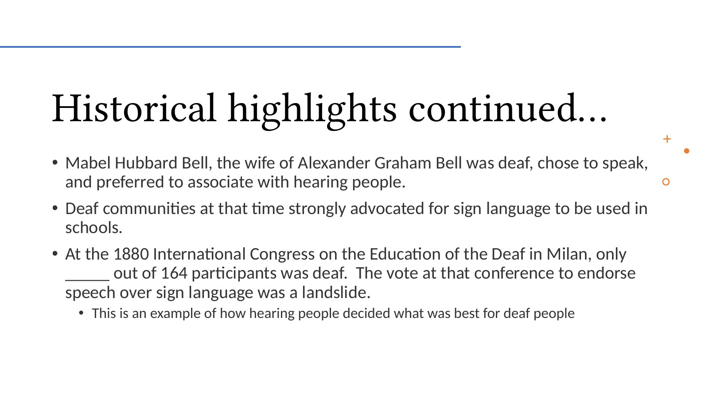
Historical highlights continued… • Mabel Hubbard Bell, the wife of Alexander Graham Bell was deaf, chose to speak, and preferred to associate with hearing people. • Deaf communities at that time strongly advocated for sign language to be used in schools. • At the 1880 International Congress on the Education of the Deaf in Milan, only _____ out of 164 participants was deaf. The vote at that conference to endorse speech over sign language was a landslide. • This is an example of how hearing people decided what was best for deaf people
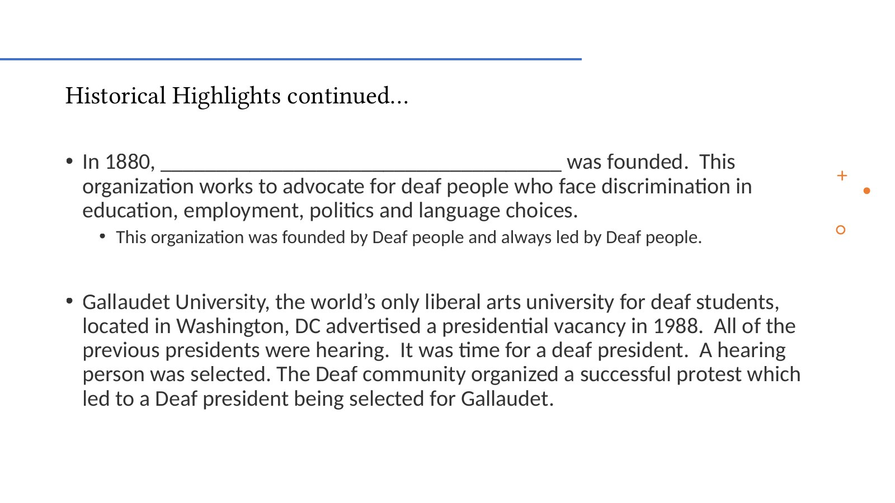
Historical Highlights continued… • In 1880, ____________________________________ was founded. This organization works to advocate for deaf people who face discrimination in education, employment, politics and language choices. • This organization was founded by Deaf people and always led by Deaf people. • Gallaudet University, the world’s only liberal arts university for deaf students, located in Washington, DC advertised a presidential vacancy in 1988. All of the previous presidents were hearing. It was time for a deaf president. A hearing person was selected. The Deaf community organized a successful protest which led to a Deaf president being selected for Gallaudet.
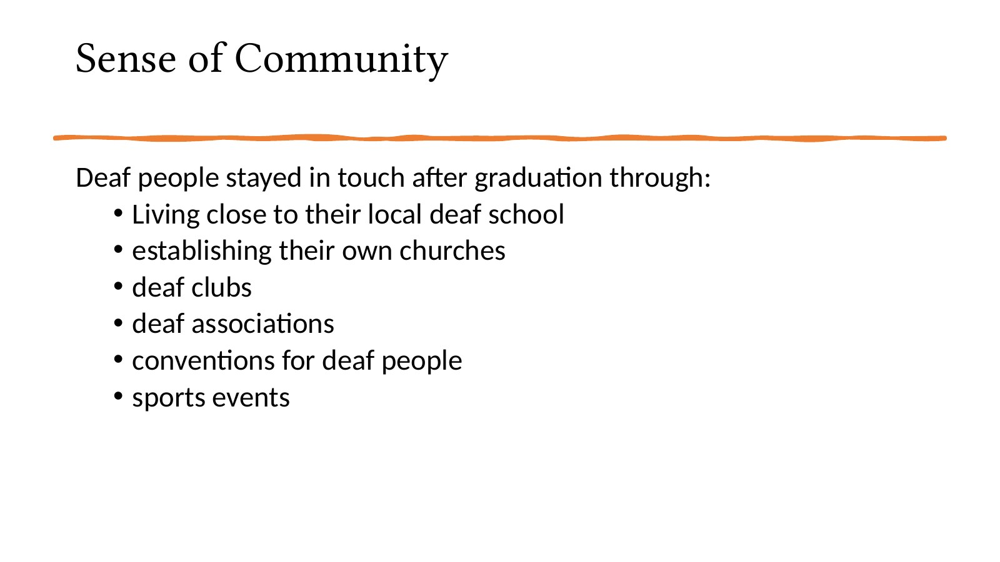
Sense of Community Deaf people stayed in touch after graduation through: • Living close to their local deaf school • establishing their own churches • deaf clubs • deaf associations • conventions for deaf people • sports events
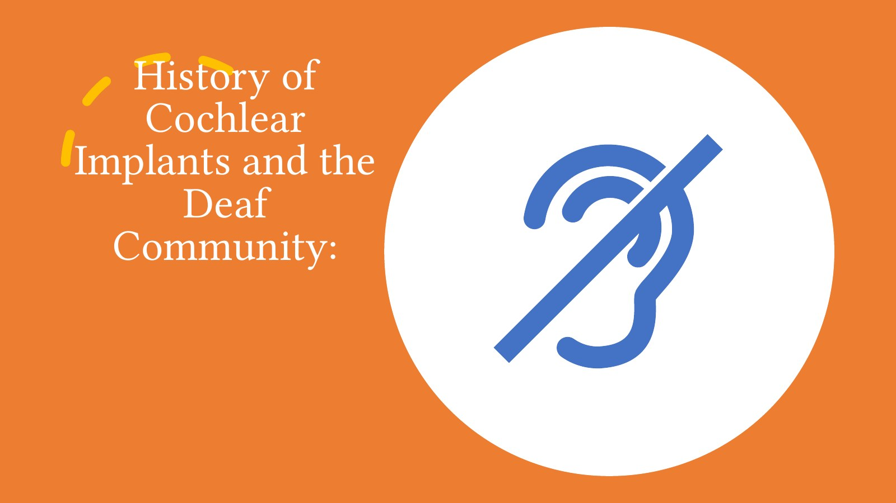
History of
Cochlear
Implants and the
Deaf
Community: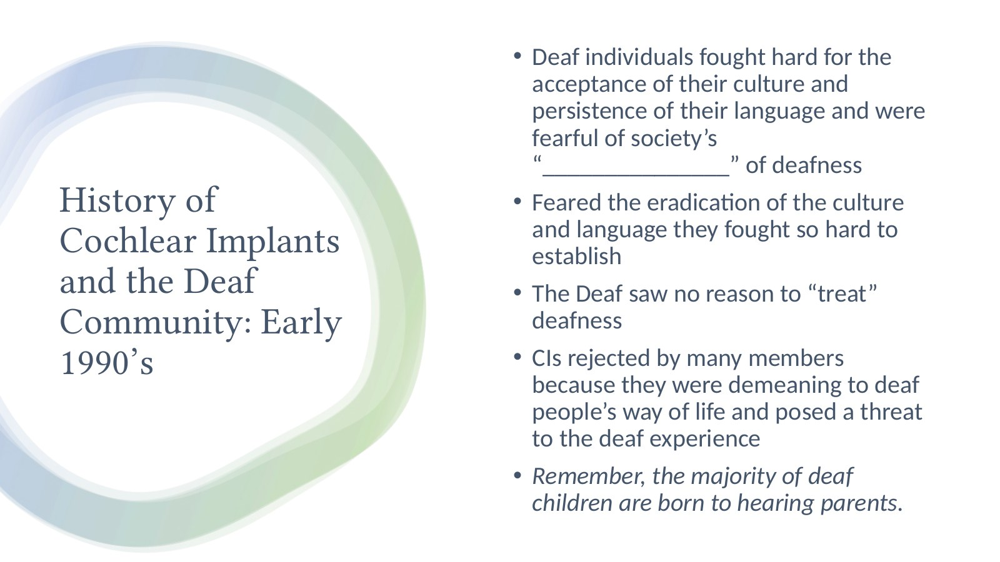
• Deaf individuals fought hard for the
acceptance of their culture and
persistence of their language and were
fearful of society’s
“_______________” of deafness
History of • Feared the eradication of the culture
and language they fought so hard to
Cochlear Implants establish
and the Deaf • The Deaf saw no reason to “treat”
Community: Early deafness
1990’s • CIs rejected by many members
because they were demeaning to deaf
people’s way of life and posed a threat
to the deaf experience
• Remember, the majority of deaf
children are born to hearing parents.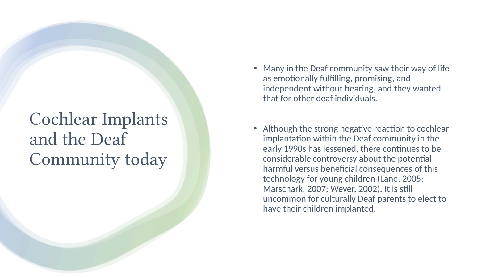
• Many in the Deaf community saw their way of life
as emotionally fulfilling, promising, and
independent without hearing, and they wanted
that for other deaf individuals.
Cochlear Implants • Although the strong negative reaction to cochlear
and the Deaf implantation within the Deaf community in the
early 1990s has lessened, there continues to be
Community today considerable controversy about the potential
harmful versus beneficial consequences of this
technology for young children (Lane, 2005;
Marschark, 2007; Wever, 2002). It is still
uncommon for culturally Deaf parents to elect to
have their children implanted.